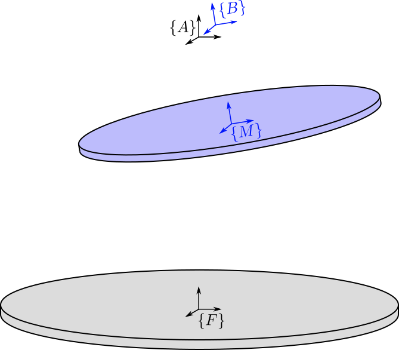
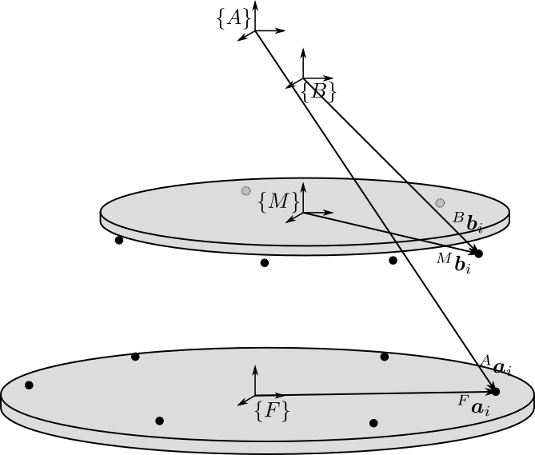
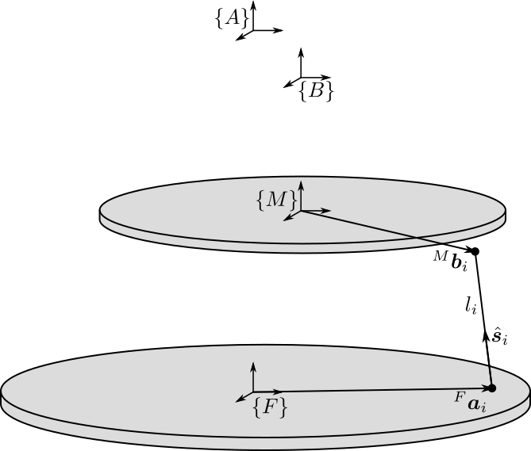
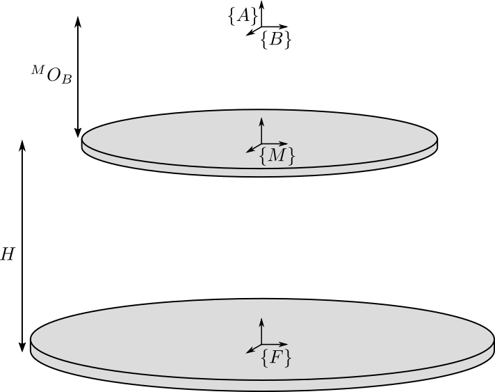
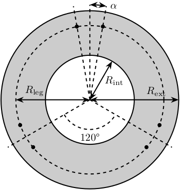

Stewart Platform - Definition of the Architecture
Table of Contents
- 1. Definition of the Stewart Platform Geometry
- 2. Definition of the Inertia and geometry of the Fixed base, Mobile platform and Struts
- 3. Definition of the stiffness and damping of the joints
- 4. Summary of the Initialization Procedure and Matlab Example
- 5. Functions
- 5.1.
initializeFramesPositions: Initialize the positions of frames {A}, {B}, {F} and {M} - 5.2.
generateGeneralConfiguration: Generate a Very General Configuration - 5.3.
computeJointsPose: Compute the Pose of the Joints - 5.4.
initializeStewartPose: Determine the initial stroke in each leg to have the wanted pose - 5.5.
initializeCylindricalPlatforms: Initialize the geometry of the Fixed and Mobile Platforms - 5.6.
initializeCylindricalStruts: Define the inertia of cylindrical struts - 5.7.
initializeStrutDynamics: Add Stiffness and Damping properties of each strut - 5.8.
initializeJointDynamics: Add Stiffness and Damping properties for spherical joints
- 5.1.
In this document is explained how the Stewart Platform architecture is defined.
Some efforts has been made such that the procedure for the definition of the Stewart Platform architecture is as logical and clear as possible.
When possible, the notations are compatible with the one used in taghirad13_paral.
The definition of the Stewart platform is done in three main parts:
- First, the geometry if defined (Section 1)
- Then, the inertia of the mechanical elements are defined (Section 2)
- Finally, the Stiffness and Damping characteristics of the elements are defined (Section 3)
In section 4, the procedure the initialize the Stewart platform is summarize and the associated Matlab code is shown.
Finally, all the Matlab function used to initialize the Stewart platform are described in section 5.
1 Definition of the Stewart Platform Geometry
Stewart platforms are generated in multiple steps:
- Definition of the frames
- Definition of the location of the joints
- Computation of the length and orientation of the struts
- Choice of the rest position of the mobile platform
This steps are detailed below.
1.1 Frames Definition
We define 4 important frames (see Figure 1):
- \(\{F\}\): Frame fixed to the Fixed base and located at the center of its bottom surface. This is used to fix the Stewart platform to some support.
- \(\{M\}\): Frame fixed to the Moving platform and located at the center of its top surface. This is used to place things on top of the Stewart platform.
- \(\{A\}\): Frame fixed to the fixed base.
- \(\{B\}\): Frame fixed to the moving platform.
Even though frames \(\{A\}\) and \(\{B\}\) don’t usually correspond to physical elements, they are of primary importance. Firstly, they are used for the definition of the motion of the Mobile platform with respect to the fixed frame:
- In position: \({}^A\bm{P}_{B}\) (read: Position of frame \(\{B\}\) expressed in frame \(\{A\}\))
- In rotation: \({}^A\bm{R}_{B}\) (read: The rotation matrix that express the orientation of frame \(\{B\}\) expressed in frame \(\{A\}\))
The frames \(\{A\}\) and \(\{B\}\) are used for all the kinematic analysis (Jacobian, Stiffness matrix, …).
Typical choice of \(\{A\}\) and \(\{B\}\) are:
- Center of mass of the payload
- Location where external forces are applied to the mobile platform (for instance when the mobile platform is in contact with a stiff environment)
- Center of the cube for the cubic configuration
The definition of the frames is done with the initializeFramesPositions function (link);

Figure 1: Definition of the Frames for the Stewart Platform
1.2 Location of the Spherical Joints
Then, we define the location of the spherical joints (see Figure 2):
- \(\bm{a}_{i}\) are the position of the spherical joints fixed to the fixed base
- \(\bm{b}_{i}\) are the position of the spherical joints fixed to the moving platform
The location of the joints will define the Geometry of the Stewart platform. Many characteristics of the platform depend on the location of the joints.
The location of the joints can be set to arbitrary positions or it can be computed to obtain specific configurations such as:
- A cubic configuration: function
generateCubicConfiguration(described in this file) - A symmetrical configuration
A function (generateGeneralConfiguration) to set the position of the joints on a circle is described here.
The location of the spherical joints are then given by \({}^{F}\bm{a}_{i}\) and \({}^{M}\bm{b}_{i}\).

Figure 2: Position of the Spherical/Universal joints for the Stewart Platform
1.3 Length and orientation of the struts
From the location of the joints (\({}^{F}\bm{a}_{i}\) and \({}^{M}\bm{b}_{i}\)), we compute the length \(l_i\) and orientation of each strut \(\hat{\bm{s}}_i\) (unit vector aligned with the strut). The length and orientation of each strut is represented in figure 3.
This is done with the computeJointsPose function (link).

Figure 3: Length \(l_i\) and orientation \(\hat{\bm{s}}_i\) of the Stewart platform struts
1.4 Rest Position of the Stewart platform
We may want to initialize the Stewart platform in some position and orientation that corresponds to its rest position.
To do so, we choose:
- the position of \(\bm{O}_B\) expressed in \(\{A\}\) using \({}^A\bm{P}\)
- the orientation of \(\{B\}\) expressed in \(\{A\}\) using a rotation matrix \({}^{A}\bm{R}_{B}\)
Then, the function initializeStewartPose (link) compute the corresponding initial and rest position of each of the strut.
2 Definition of the Inertia and geometry of the Fixed base, Mobile platform and Struts
Now that the geometry of the Stewart platform has been defined, we have to choose the inertia of:
- The Fixed base
- The Mobile platform
- The two parts of the struts
The inertia of these elements will modify the dynamics of the systems. It is thus important to set them properly.
2.1 Inertia and Geometry of the Fixed and Mobile platforms
In order to set the inertia of the fixed and mobile platforms, we can use the following function that assume that both platforms are cylindrical:
initializeCylindricalPlatforms(link): by choosing the height, radius and mass of the platforms, it computes the inertia matrix that will be used for simulation
2.2 Inertia and Geometry of the struts
Similarly for the struts, we suppose here that they have a cylindrical shape. They are initialize with the following function:
initializeCylindricalStruts(link): the two parts of each strut are supposed to by cylindrical. We can set the mass and geometry of both strut parts.
3 Definition of the stiffness and damping of the joints
The global stiffness and damping of the Stewart platform depends on its geometry but also on the stiffness and damping of:
- the actuator because of the finite stiffness of the actuator / linear guide
- the spherical joints
3.1 Stiffness and Damping of the Actuator
Each Actuator is modeled by 3 elements in parallel (Figure 4):
- A spring with a stiffness \(k_{i}\)
- A dashpot with a damping \(c_{i}\)
- An ideal force actuator generating a force \(\tau_i\)

Figure 4: Model of the Stewart platform actuator
The initialization of the stiffness and damping properties of the actuators is done with the initializeStrutDynamics (link).
3.2 Stiffness and Damping of the Spherical Joints
Even though we often suppose that the spherical joint are perfect in the sense that we neglect its stiffness and damping, we can set some rotation stiffness and damping of each of the spherical/universal joints.
This is done with the initializeJointDynamics function (link).
4 Summary of the Initialization Procedure and Matlab Example
The procedure to define the Stewart platform is the following:
- Define the initial position of frames \(\{A\}\), \(\{B\}\), \(\{F\}\) and \(\{M\}\).
We do that using the
initializeFramesPositionsfunction. We have to specify the total height of the Stewart platform \(H\) and the position \({}^{M}\bm{O}_{B}\) of \(\{B\}\) with respect to \(\{M\}\). - Compute the positions of joints \({}^{F}\bm{a}_{i}\) and \({}^{M}\bm{b}_{i}\).
We can do that using various methods depending on the wanted architecture:
generateCubicConfigurationpermits to generate a cubic configuration
- Compute the position and orientation of the joints with respect to the fixed base and the moving platform.
This is done with the
computeJointsPosefunction. If wanted, compute the rest position of each strut to have the wanted pose of the mobile platform with the functioninitializeStewartPose. - Define the mass and inertia of each element of the Stewart platform with the
initializeCylindricalPlatformsandinitializeCylindricalStruts - Define the dynamical properties of the Stewart platform by setting the stiffness and damping of the actuators and joints.
By following this procedure, we obtain a Matlab structure stewart that contains all the information for the Simscape model and for further analysis.
4.1 Example of the initialization of a Stewart Platform
Let’s first define the Stewart Platform Geometry.
stewart = initializeFramesPositions('H', 90e-3, 'MO_B', 45e-3); stewart = generateGeneralConfiguration(stewart); stewart = computeJointsPose(stewart); stewart = initializeStewartPose(stewart, 'AP', [0;0;0.01], 'ARB', eye(3));
Then, define the inertia and geometry of the fixed base, mobile platform and struts.
stewart = initializeCylindricalPlatforms(stewart); stewart = initializeCylindricalStruts(stewart);
Finally, initialize the strut stiffness and damping properties.
stewart = initializeStrutDynamics(stewart, 'Ki', 1e6*ones(6,1), 'Ci', 1e2*ones(6,1)); stewart = initializeJointDynamics(stewart, 'Ksi', zeros(6,1), 'Csi', zeros(6,1));
The obtained stewart Matlab structure contains all the information for analysis of the Stewart platform and for simulations using Simscape.
5 Functions
5.1 initializeFramesPositions: Initialize the positions of frames {A}, {B}, {F} and {M}
This Matlab function is accessible here.
Function description
function [stewart] = initializeFramesPositions(args) % initializeFramesPositions - Initialize the positions of frames {A}, {B}, {F} and {M} % % Syntax: [stewart] = initializeFramesPositions(args) % % Inputs: % - args - Can have the following fields: % - H [1x1] - Total Height of the Stewart Platform (height from {F} to {M}) [m] % - MO_B [1x1] - Height of the frame {B} with respect to {M} [m] % % Outputs: % - stewart - A structure with the following fields: % - H [1x1] - Total Height of the Stewart Platform [m] % - FO_M [3x1] - Position of {M} with respect to {F} [m] % - MO_B [3x1] - Position of {B} with respect to {M} [m] % - FO_A [3x1] - Position of {A} with respect to {F} [m]
Documentation

Figure 5: Definition of the position of the frames
Optional Parameters
arguments
args.H (1,1) double {mustBeNumeric, mustBePositive} = 90e-3
args.MO_B (1,1) double {mustBeNumeric} = 50e-3
end
Initialize the Stewart structure
stewart = struct();
Compute the position of each frame
stewart.H = args.H; % Total Height of the Stewart Platform [m] stewart.FO_M = [0; 0; stewart.H]; % Position of {M} with respect to {F} [m] stewart.MO_B = [0; 0; args.MO_B]; % Position of {B} with respect to {M} [m] stewart.FO_A = stewart.MO_B + stewart.FO_M; % Position of {A} with respect to {F} [m]
5.2 generateGeneralConfiguration: Generate a Very General Configuration
This Matlab function is accessible here.
Function description
function [stewart] = generateGeneralConfiguration(stewart, args) % generateGeneralConfiguration - Generate a Very General Configuration % % Syntax: [stewart] = generateGeneralConfiguration(stewart, args) % % Inputs: % - args - Can have the following fields: % - FH [1x1] - Height of the position of the fixed joints with respect to the frame {F} [m] % - FR [1x1] - Radius of the position of the fixed joints in the X-Y [m] % - FTh [6x1] - Angles of the fixed joints in the X-Y plane with respect to the X axis [rad] % - MH [1x1] - Height of the position of the mobile joints with respect to the frame {M} [m] % - FR [1x1] - Radius of the position of the mobile joints in the X-Y [m] % - MTh [6x1] - Angles of the mobile joints in the X-Y plane with respect to the X axis [rad] % % Outputs: % - stewart - updated Stewart structure with the added fields: % - Fa [3x6] - Its i'th column is the position vector of joint ai with respect to {F} % - Mb [3x6] - Its i'th column is the position vector of joint bi with respect to {M}
Documentation
Joints are positions on a circle centered with the Z axis of {F} and {M} and at a chosen distance from {F} and {M}. The radius of the circles can be chosen as well as the angles where the joints are located (see Figure 6).

Figure 6: Position of the joints
Optional Parameters
arguments
stewart
args.FH (1,1) double {mustBeNumeric, mustBePositive} = 15e-3
args.FR (1,1) double {mustBeNumeric, mustBePositive} = 115e-3;
args.FTh (6,1) double {mustBeNumeric} = [-10, 10, 120-10, 120+10, 240-10, 240+10]*(pi/180);
args.MH (1,1) double {mustBeNumeric, mustBePositive} = 15e-3
args.MR (1,1) double {mustBeNumeric, mustBePositive} = 90e-3;
args.MTh (6,1) double {mustBeNumeric} = [-60+10, 60-10, 60+10, 180-10, 180+10, -60-10]*(pi/180);
end
Compute the pose
stewart.Fa = zeros(3,6); stewart.Mb = zeros(3,6);
for i = 1:6 stewart.Fa(:,i) = [args.FR*cos(args.FTh(i)); args.FR*sin(args.FTh(i)); args.FH]; stewart.Mb(:,i) = [args.MR*cos(args.MTh(i)); args.MR*sin(args.MTh(i)); -args.MH]; end
5.3 computeJointsPose: Compute the Pose of the Joints
This Matlab function is accessible here.
Function description
function [stewart] = computeJointsPose(stewart) % computeJointsPose - % % Syntax: [stewart] = computeJointsPose(stewart) % % Inputs: % - stewart - A structure with the following fields % - Fa [3x6] - Its i'th column is the position vector of joint ai with respect to {F} % - Mb [3x6] - Its i'th column is the position vector of joint bi with respect to {M} % - FO_A [3x1] - Position of {A} with respect to {F} % - MO_B [3x1] - Position of {B} with respect to {M} % - FO_M [3x1] - Position of {M} with respect to {F} % % Outputs: % - stewart - A structure with the following added fields % - Aa [3x6] - The i'th column is the position of ai with respect to {A} % - Ab [3x6] - The i'th column is the position of bi with respect to {A} % - Ba [3x6] - The i'th column is the position of ai with respect to {B} % - Bb [3x6] - The i'th column is the position of bi with respect to {B} % - l [6x1] - The i'th element is the initial length of strut i % - As [3x6] - The i'th column is the unit vector of strut i expressed in {A} % - Bs [3x6] - The i'th column is the unit vector of strut i expressed in {B} % - FRa [3x3x6] - The i'th 3x3 array is the rotation matrix to orientate the bottom of the i'th strut from {F} % - MRb [3x3x6] - The i'th 3x3 array is the rotation matrix to orientate the top of the i'th strut from {M}
Documentation

Figure 7: Position and orientation of the struts
Compute the position of the Joints
stewart.Aa = stewart.Fa - repmat(stewart.FO_A, [1, 6]); stewart.Bb = stewart.Mb - repmat(stewart.MO_B, [1, 6]); stewart.Ab = stewart.Bb - repmat(-stewart.MO_B-stewart.FO_M+stewart.FO_A, [1, 6]); stewart.Ba = stewart.Aa - repmat( stewart.MO_B+stewart.FO_M-stewart.FO_A, [1, 6]);
Compute the strut length and orientation
stewart.As = (stewart.Ab - stewart.Aa)./vecnorm(stewart.Ab - stewart.Aa); % As_i is the i'th vector of As stewart.l = vecnorm(stewart.Ab - stewart.Aa)';
stewart.Bs = (stewart.Bb - stewart.Ba)./vecnorm(stewart.Bb - stewart.Ba);
Compute the orientation of the Joints
stewart.FRa = zeros(3,3,6); stewart.MRb = zeros(3,3,6); for i = 1:6 stewart.FRa(:,:,i) = [cross([0;1;0], stewart.As(:,i)) , cross(stewart.As(:,i), cross([0;1;0], stewart.As(:,i))) , stewart.As(:,i)]; stewart.FRa(:,:,i) = stewart.FRa(:,:,i)./vecnorm(stewart.FRa(:,:,i)); stewart.MRb(:,:,i) = [cross([0;1;0], stewart.Bs(:,i)) , cross(stewart.Bs(:,i), cross([0;1;0], stewart.Bs(:,i))) , stewart.Bs(:,i)]; stewart.MRb(:,:,i) = stewart.MRb(:,:,i)./vecnorm(stewart.MRb(:,:,i)); end
5.4 initializeStewartPose: Determine the initial stroke in each leg to have the wanted pose
This Matlab function is accessible here.
Function description
function [stewart] = initializeStewartPose(stewart, args) % initializeStewartPose - Determine the initial stroke in each leg to have the wanted pose % It uses the inverse kinematic % % Syntax: [stewart] = initializeStewartPose(stewart, args) % % Inputs: % - stewart - A structure with the following fields % - Aa [3x6] - The positions ai expressed in {A} % - Bb [3x6] - The positions bi expressed in {B} % - args - Can have the following fields: % - AP [3x1] - The wanted position of {B} with respect to {A} % - ARB [3x3] - The rotation matrix that gives the wanted orientation of {B} with respect to {A} % % Outputs: % - stewart - updated Stewart structure with the added fields: % - dLi[6x1] - The 6 needed displacement of the struts from the initial position in [m] to have the wanted pose of {B} w.r.t. {A}
Optional Parameters
arguments
stewart
args.AP (3,1) double {mustBeNumeric} = zeros(3,1)
args.ARB (3,3) double {mustBeNumeric} = eye(3)
end
Use the Inverse Kinematic function
[Li, dLi] = inverseKinematics(stewart, 'AP', args.AP, 'ARB', args.ARB); stewart.dLi = dLi;
5.5 initializeCylindricalPlatforms: Initialize the geometry of the Fixed and Mobile Platforms
This Matlab function is accessible here.
Function description
function [stewart] = initializeCylindricalPlatforms(stewart, args) % initializeCylindricalPlatforms - Initialize the geometry of the Fixed and Mobile Platforms % % Syntax: [stewart] = initializeCylindricalPlatforms(args) % % Inputs: % - args - Structure with the following fields: % - Fpm [1x1] - Fixed Platform Mass [kg] % - Fph [1x1] - Fixed Platform Height [m] % - Fpr [1x1] - Fixed Platform Radius [m] % - Mpm [1x1] - Mobile Platform Mass [kg] % - Mph [1x1] - Mobile Platform Height [m] % - Mpr [1x1] - Mobile Platform Radius [m] % % Outputs: % - stewart - updated Stewart structure with the added fields: % - platforms [struct] - structure with the following fields: % - Fpm [1x1] - Fixed Platform Mass [kg] % - Msi [3x3] - Mobile Platform Inertia matrix [kg*m^2] % - Fph [1x1] - Fixed Platform Height [m] % - Fpr [1x1] - Fixed Platform Radius [m] % - Mpm [1x1] - Mobile Platform Mass [kg] % - Fsi [3x3] - Fixed Platform Inertia matrix [kg*m^2] % - Mph [1x1] - Mobile Platform Height [m] % - Mpr [1x1] - Mobile Platform Radius [m]
Optional Parameters
arguments
stewart
args.Fpm (1,1) double {mustBeNumeric, mustBePositive} = 1
args.Fph (1,1) double {mustBeNumeric, mustBePositive} = 10e-3
args.Fpr (1,1) double {mustBeNumeric, mustBePositive} = 125e-3
args.Mpm (1,1) double {mustBeNumeric, mustBePositive} = 1
args.Mph (1,1) double {mustBeNumeric, mustBePositive} = 10e-3
args.Mpr (1,1) double {mustBeNumeric, mustBePositive} = 100e-3
end
Create the platforms struct
platforms = struct(); platforms.Fpm = args.Fpm; platforms.Fph = args.Fph; platforms.Fpr = args.Fpr; platforms.Fpi = diag([1/12 * platforms.Fpm * (3*platforms.Fpr^2 + platforms.Fph^2), ... 1/12 * platforms.Fpm * (3*platforms.Fpr^2 + platforms.Fph^2), ... 1/2 * platforms.Fpm * platforms.Fpr^2]); platforms.Mpm = args.Mpm; platforms.Mph = args.Mph; platforms.Mpr = args.Mpr; platforms.Mpi = diag([1/12 * platforms.Mpm * (3*platforms.Mpr^2 + platforms.Mph^2), ... 1/12 * platforms.Mpm * (3*platforms.Mpr^2 + platforms.Mph^2), ... 1/2 * platforms.Mpm * platforms.Mpr^2]);
Save the platforms struct
stewart.platforms = platforms;
5.6 initializeCylindricalStruts: Define the inertia of cylindrical struts
This Matlab function is accessible here.
Function description
function [stewart] = initializeCylindricalStruts(stewart, args) % initializeCylindricalStruts - Define the mass and moment of inertia of cylindrical struts % % Syntax: [stewart] = initializeCylindricalStruts(args) % % Inputs: % - args - Structure with the following fields: % - Fsm [1x1] - Mass of the Fixed part of the struts [kg] % - Fsh [1x1] - Height of cylinder for the Fixed part of the struts [m] % - Fsr [1x1] - Radius of cylinder for the Fixed part of the struts [m] % - Msm [1x1] - Mass of the Mobile part of the struts [kg] % - Msh [1x1] - Height of cylinder for the Mobile part of the struts [m] % - Msr [1x1] - Radius of cylinder for the Mobile part of the struts [m] % % Outputs: % - stewart - updated Stewart structure with the added fields: % - struts [struct] - structure with the following fields: % - Fsm [6x1] - Mass of the Fixed part of the struts [kg] % - Fsi [3x3x6] - Moment of Inertia for the Fixed part of the struts [kg*m^2] % - Msm [6x1] - Mass of the Mobile part of the struts [kg] % - Msi [3x3x6] - Moment of Inertia for the Mobile part of the struts [kg*m^2] % - Fsh [6x1] - Height of cylinder for the Fixed part of the struts [m] % - Fsr [6x1] - Radius of cylinder for the Fixed part of the struts [m] % - Msh [6x1] - Height of cylinder for the Mobile part of the struts [m] % - Msr [6x1] - Radius of cylinder for the Mobile part of the struts [m]
Optional Parameters
arguments
stewart
args.Fsm (1,1) double {mustBeNumeric, mustBePositive} = 0.1
args.Fsh (1,1) double {mustBeNumeric, mustBePositive} = 50e-3
args.Fsr (1,1) double {mustBeNumeric, mustBePositive} = 5e-3
args.Msm (1,1) double {mustBeNumeric, mustBePositive} = 0.1
args.Msh (1,1) double {mustBeNumeric, mustBePositive} = 50e-3
args.Msr (1,1) double {mustBeNumeric, mustBePositive} = 5e-3
end
Create the struts structure
struts = struct(); struts.Fsm = ones(6,1).*args.Fsm; struts.Msm = ones(6,1).*args.Msm; struts.Fsh = ones(6,1).*args.Fsh; struts.Fsr = ones(6,1).*args.Fsr; struts.Msh = ones(6,1).*args.Msh; struts.Msr = ones(6,1).*args.Msr; struts.Fsi = zeros(3, 3, 6); struts.Msi = zeros(3, 3, 6); for i = 1:6 struts.Fsi(:,:,i) = diag([1/12 * struts.Fsm(i) * (3*struts.Fsr(i)^2 + struts.Fsh(i)^2), ... 1/12 * struts.Fsm(i) * (3*struts.Fsr(i)^2 + struts.Fsh(i)^2), ... 1/2 * struts.Fsm(i) * struts.Fsr(i)^2]); struts.Msi(:,:,i) = diag([1/12 * struts.Msm(i) * (3*struts.Msr(i)^2 + struts.Msh(i)^2), ... 1/12 * struts.Msm(i) * (3*struts.Msr(i)^2 + struts.Msh(i)^2), ... 1/2 * struts.Msm(i) * struts.Msr(i)^2]); end
stewart.struts = struts;
5.7 initializeStrutDynamics: Add Stiffness and Damping properties of each strut
This Matlab function is accessible here.
Function description
function [stewart] = initializeStrutDynamics(stewart, args) % initializeStrutDynamics - Add Stiffness and Damping properties of each strut % % Syntax: [stewart] = initializeStrutDynamics(args) % % Inputs: % - args - Structure with the following fields: % - Ki [6x1] - Stiffness of each strut [N/m] % - Ci [6x1] - Damping of each strut [N/(m/s)] % % Outputs: % - stewart - updated Stewart structure with the added fields: % - Ki [6x1] - Stiffness of each strut [N/m] % - Ci [6x1] - Damping of each strut [N/(m/s)]
Optional Parameters
arguments
stewart
args.Ki (6,1) double {mustBeNumeric, mustBeNonnegative} = 1e6*ones(6,1)
args.Ci (6,1) double {mustBeNumeric, mustBeNonnegative} = 1e1*ones(6,1)
end
Add Stiffness and Damping properties of each strut
stewart.Ki = args.Ki; stewart.Ci = args.Ci;
5.8 initializeJointDynamics: Add Stiffness and Damping properties for spherical joints
This Matlab function is accessible here.
Function description
function [stewart] = initializeJointDynamics(stewart, args) % initializeJointDynamics - Add Stiffness and Damping properties for the spherical joints % % Syntax: [stewart] = initializeJointDynamics(args) % % Inputs: % - args - Structure with the following fields: % - Ksbi [6x1] - Bending (Rx, Ry) Stiffness for each top Spherical joints [N/rad] % - Csbi [6x1] - Bending (Rx, Ry) Damping of each top Spherical joint [N/(rad/s)] % - Ksti [6x1] - Torsion (Rz) Stiffness for each top Spherical joints [N/rad] % - Csti [6x1] - Torsion (Rz) Damping of each top Spherical joint [N/(rad/s)] % - Kubi [6x1] - Bending (Rx, Ry) Stiffness for each bottom Universal joints [N/rad] % - Cubi [6x1] - Bending (Rx, Ry) Damping of each bottom Universal joint [N/(rad/s)] % - disable [true/false] - Sets all the stiffness/damping to zero % % Outputs: % - stewart - updated Stewart structure with the added fields: % - Ksbi [6x1] - Bending (Rx, Ry) Stiffness for each top Spherical joints [N/rad] % - Csbi [6x1] - Bending (Rx, Ry) Damping of each top Spherical joint [N/(rad/s)] % - Ksti [6x1] - Torsion (Rz) Stiffness for each top Spherical joints [N/rad] % - Csti [6x1] - Torsion (Rz) Damping of each top Spherical joint [N/(rad/s)] % - Kubi [6x1] - Bending (Rx, Ry) Stiffness for each bottom Universal joints [N/rad] % - Cubi [6x1] - Bending (Rx, Ry) Damping of each bottom Universal joint [N/(rad/s)]
Optional Parameters
arguments
stewart
args.Ksbi (6,1) double {mustBeNumeric, mustBeNonnegative} = 1e+1*ones(6,1)
args.Csbi (6,1) double {mustBeNumeric, mustBeNonnegative} = 1e-4*ones(6,1)
args.Ksti (6,1) double {mustBeNumeric, mustBeNonnegative} = 1e+0*ones(6,1)
args.Csti (6,1) double {mustBeNumeric, mustBeNonnegative} = 1e-3*ones(6,1)
args.Kubi (6,1) double {mustBeNumeric, mustBeNonnegative} = 1e+1*ones(6,1)
args.Cubi (6,1) double {mustBeNumeric, mustBeNonnegative} = 1e-4*ones(6,1)
args.disable logical {mustBeNumericOrLogical} = false
end
Add Stiffness and Damping properties of each strut
if args.disable stewart.Ksbi = zeros(6,1); stewart.Csbi = zeros(6,1); stewart.Ksti = zeros(6,1); stewart.Csti = zeros(6,1); stewart.Kubi = zeros(6,1); stewart.Cubi = zeros(6,1); else stewart.Ksbi = args.Ksbi; stewart.Csbi = args.Csbi; stewart.Ksti = args.Ksti; stewart.Csti = args.Csti; stewart.Kubi = args.Kubi; stewart.Cubi = args.Cubi; end
Bibliography
- [taghirad13_paral] Taghirad, Parallel robots : mechanics and control, CRC Press (2013).